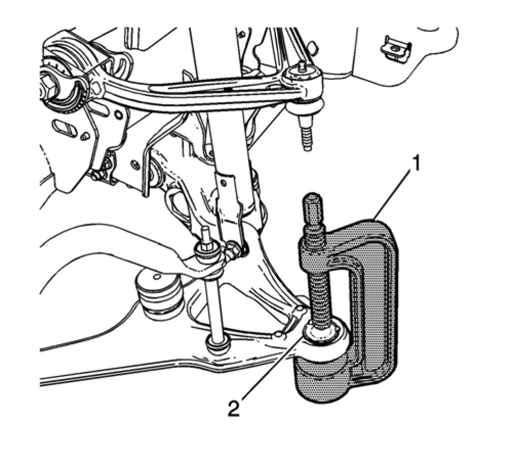

Lower Ball Joint Replacement (2500, 3500)
Lower Control Arm Ball Joint Replacement (2500, 3500)
Special Tools
- CH49240 Ball Joint Crimper and Install Kit
- J41805 Ball Joint Remover/Installer
Removal Procedure
1. Raise and support the vehicle.
Note: When removing the knuckle, DO NOT remove any of the brake or electrical components from the knuckle. Secure the knuckle assembly to the side.
2. Remove the knuckle from the vehicle. Refer to Steering Knuckle Replacement Service and Repair.
3. Using a hammer and a chisel, remove the lock tabs (1) from the lower ball joint.

Note: Ensure that the upper ball joint is not being rubbed on the ratchet during the removal or installation of the lower ball joint. Rubbing on the upper ball joint seal will cause premature failure of the upper ball joint.
4. Using the J 41805 remover/installer (1) and the appropriate adapter, remove the lower ball joint (2).
Installation Procedure
1. Position the lower ball joint (1) in the lower control arm.
2. Align the lower ball joint grease fitting (1) with the channel (2) in the lower control arm.
Note: Ensure that the upper ball joint is not being rubbed on the ratchet during the removal or installation of the lower ball joint. Rubbing on the upper ball joint seal will cause premature failure of the upper ball joint.
3. Using the J 41805 remover/installer (1), the appropriate adapter (3), and the CH 49240 install Kit (2), install the lower ball joint.
4. Ensure that the ball joint (2) is fully seated against the lower control arm (1).
5. Using a hammer and a punch, created the lock tabs (1) for the lower ball joint.
6. Install the knuckle. Refer to Steering Knuckle Replacement Service and Repair.
7. Install the lower ball joint stud nut and tighten to:
- First Pass: 50 Nm (37 lb ft)
- Final Pass: additional 130 degrees
8. Remove the support and lower the vehicle.